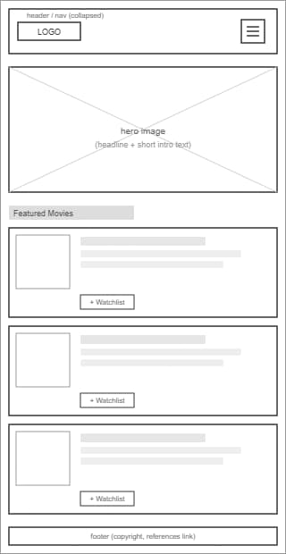
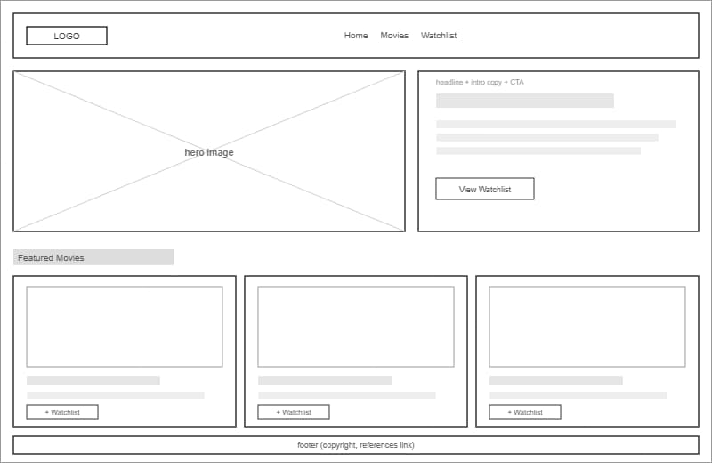

Site Name
ReelKeeper
The name combines "reel" — a nod to classic film reels and the cinema experience — with "keeper," reflecting the site's core feature: keeping track of favorite movies and a personal watchlist. It's short, memorable, and ties directly to the site's purpose rather than reading like a generic movie database name.
Optional domain availability: reelkeeper.dev
Site Purpose
The site provides a personal, curated guide to movies I love and want to watch. It offers short reviews and ratings for favorite films, organized so visitors can browse by genre, and a watchlist feature that lets a visitor save movies to watch later, with the list persisting between visits.
Scenarios
Questions a visitor might ask that the site's content should answer:
- What are some highly-rated drama movies I should watch this year?
- How do I save a movie to my watchlist so I remember to watch it later?
- Which of the featured movies are similar to films I've already marked as favorites?
Color Schema
This palette follows the color-psychology guide linked in the assignment. Red is the main color because the guide describes it as urgency, excitement, and energy, which fits a movie site. Red is only used for headings and small accents, not for large blocks of text, since the guide says colored type should be kept for links and important information.
The background is dark instead of the more common off-white option. The same guide also lists black as elegant and common in premium brands, which is closer to the mood I want for a movie site than a plain white background would be. Gold is not a strict color-wheel complement to red, but it is a warm color that sits near it and still stands out against the dark background, which is what the guide says the second color should do. All the combinations below were checked with a contrast calculator against the WCAG AA minimum (4.5:1 for normal text).
Typography
The font pairing follows the advice in the Google Fonts guide linked in the assignment: use one font with personality for headings and a plain, familiar font for body text. Oswald is bold and condensed, which fits the guide's notes on display fonts for short titles. Open Sans is used for paragraphs and labels because it stays readable at small sizes and is already used on other pages for this course, so the styling stays consistent across assignments.
Oswald — Headings (h1–h3)
Bold, condensed letterforms similar to what you'd see on a movie poster. Used for page titles, section headings, and card titles.
Open Sans — Body text, labels, navigation
A plain, readable sans-serif used for paragraphs, reviews, form labels, and navigation links.
Wireframes
Rough layout sketches of the home page in mobile and desktop viewports. Boxes represent content blocks, not final visuals.

